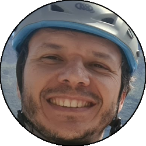

Relazione
| Data Uscita | 04-07-2023, Martedì | Area | Grigne |
|---|---|---|---|
| Luogo di Partenza | Parcheggio della Ciclabile - Pasturo (LC) | Quota |
600m la partenza 610m (circa) l'attacco della via 740m (circa) la cima |
| Dislivello | 140m | Tempi | 02:30 ore (02:00 ore la via) |
| Esposizione | Sud-Est | Difficoltà Tecnica | 5b (5a/A0) |
| Punti di Appoggio | Nessuno ma si è nei pressi del paese | Acqua | Torrente a fianco del sentiero durante l'avvicinamento e fontanelle nel paesino di Baiedo durante la discesa |
| Partecipanti |
 Andrea,
 Oracolo, Oracolo,
 Silvia Silvia
|
||
(clicca sull'immagine per scarica la traccia GPS)
Accesso
Da Lecco portarsi in Valsassina, superare il colle di Balisio e scendere in direzione Introbio. Superata la piana di Pasturo portarsi alla chiusa della Valsassina, e qui prima di passare lato Introbio parcheggiare a sinistra nei pressi della ciclabile. Diversi posti.
Avvicinamento
Prendere il sentiero che torna verso Pasturo costeggiando il torrente, sistemato recentemente. Ignorare una prima deviazione (indicazioni settore Baiedo) e prendere la seconda (indicazione Solitudine). Salire i ripidi scalini fino alla base della Rocca, qui attacca Solitudine (evidente scritta alla base).
Via
L1: Salire il pilastrino sulla destra, fino a una zona appoggiata. Salire poi per fessure e lame in verticale fino alla comoda sosta su un pulpito (2 resinati + catena).
» 20m, diversi resinati (3c, 4b)
» 20m, diversi resinati (3c, 4b)
L2: Portarsi appena a sinistra dello spigolo, e con un passo atletico (azzerabile) rimontare uno strapiombino, per poi proseguire in verticale seguendo lo spigolo o le belle fessure sulla destra, fino a un terrazzino con pianta dove si trova la sosta (2 resinati + catena).
» 20m, diversi resinati (5b/A0, 4b)
» 20m, diversi resinati (5b/A0, 4b)
L3: Salire il diedro a destra della sosta con bella arrampicata, poi seguire lo speroncino fino a una sosta. Saltarla proseguendo sulla sinistra per bosco e placchette un po' sporche, fino alla base della grande placca dove si trova la sosta (2 resinati + catena).
» 40m, diversi resinati, 1 sosta intermedia (4b, 3a)
» 40m, diversi resinati, 1 sosta intermedia (4b, 3a)
L4: Salire la placca senza percorso obbligato ma più facile a sinistra, e collegare le varie fessure spostandosi un po' a sinistra e un po' a destra, fino a una zona centrale dove si supera un passaggio in aderenza (2 resinati vicini, azzerabile). A questo punto proseguire in verticale su comode fessure fino a un pulpito in mezzo alla placca dove si trova la sosta (2 resinati + catena).
» 40m, 2 clessidre cordonate, 3 resinati (5a, 5b/A0, 4c)
» 40m, 2 clessidre cordonate, 3 resinati (5a, 5b/A0, 4c)
L5: Salire la fessura sopra la sosta con bella arrampicata in dulfer (clessidra all'inizio) e dove questa si esaurisce portarsi con un passaggio di aderenza ben protetto verso sinistra, raggiungendo una sosta intermedia (che si salta) e proseguendo ancora a sinistra sotto la paramassi, con passi via via più facili, fino all'estremità sinistra della rete (passare sotto all'ancoraggio per evitare che le corde sfreghino) fino alla comoda sosta (2 resinati + catena).
» 40m, 3 resinati, 1 chiodo, 1 sosta intermedia (5a, 4c, 4a)
» 40m, 3 resinati, 1 chiodo, 1 sosta intermedia (5a, 4c, 4a)
L6: Seguire il vago canale in verticale senza grosse difficoltà, rimontare una roccetta imbragata dalla rete paramassi, e sostare al limite del bosco (2 resinati + catena).
» 30m, 1 resinato (4a, 3b)
» 30m, 1 resinato (4a, 3b)
Discesa
Salire in verticale nel bosco seguendo l'evidente traccia, ripida ma non difficile. A un bivio in una zona dove si scollina prendere a sinistra salendo ancora, raggiungendo così la cima della Rocca (bel pulpito panoramico) a sto punto seguire l'evidente sentiero che verso destra passa da delle casette fino a scendere verso il paese (sinistra raggiunta la strada). Inoltrarsi nel paese fino a che si individua sulla sinistra (fontanella) la via Sottorocca, che va seguita molto placida fino a incrociare il sentiero dell'avvicinamento, e da lì alla macchina.